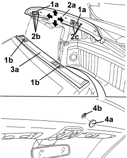
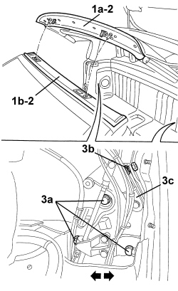

7030H05 HOOD - ADJUSTMENT
- Path
- Procedures > 70 FITTINGS > 7030 SUN ROOF/GLASS PANEL > 7030H AUTOMATICALLY OPERATED HOOD > 7030H05 HOOD - ADJUSTMENT
- Kind
- repair procedure (removal / refitting; the operation number is the code)
- Applies to
- engines: 2.2 JTS, 3.2 JTS; all production periods
- Interactive page
- https://sloeber94.github.io/elrnDB-aBrrSpdr/en/#/946004090
Applies to: engines: 2.2 JTS, 3.2 JTS; all production periods
HOOD FRONT LOCKS ADJUSTMENT
1. If, during the hood closing stage, one or both pins (1a) for the front locks do not engage correctly in their seats (1b), adjust the position of the lock(s) following the instructions below.
- Prepare the hood for the operation.
Op. 0010T79 HOOD HYDRAULIC SYSTEM - DISCHARGE AND RESTORE PRESSURE
2. Place the front part (2a) of the hood in the position illustrated, then loosen the bolts (2) and/or (2c)
- If necessary, discharge the hydraulic system pressure.
Op. 0010T79 HOOD HYDRAULIC SYSTEM - DISCHARGE AND RESTORE PRESSURE
3. Move the hood closer manually to the crossmember (3a).
4. If necessary, working in the centre of the crossmember above the windscreen, remove the cover (4a), then insert a spanner in the square socket (4b) located inside the opening and turn the spanner anti-clockwise until it is in the end of travel position (about 90°) to test the closing of the hood front locks.
When the adjustment has been carried out, tighten the bolts (2b) and/or (2c).

Applies to: engines: 2.2 JTS, 3.2 JTS; all production periods
If necessary, restore the hydraulic system pressure
Op. 7030H03 HOOD MANUAL OPENING FOLLOWING DEACTIVATION OF HYDRAULIC SYSTEM - CARRY OUT PROCEDURE
HOOD FRONT CLOSING POSITION ADJUSTMENT
1. If, during the hood closing stage, the front part (1a) is not aligned on the crossmember (1b), it is possible to adjust the hood front closing position, following the instructions below.
Op. 7065A19 IDLER SUPPORT FOR FRONT SEAT BELT (ONE), LEFT OR RIGHT - R.R.
2. Place the front part of the hood (1a) near the crossmember (1b), as illustrated.
- Discharge the hydraulic system pressure.
Op. 0010T79 HOOD HYDRAULIC SYSTEM - DISCHARGE AND RESTORE PRESSURE
3. Working on both sides of the vehicle, loosen the bolts (3a) fixing the hood and adjust the position of the actual hood. Manually move the front section of the hood (1a) closer to the crossmember (1b) and adjust the position.
After adjustment, tighten the bolts (3a).

Applies to: engines: 2.2 JTS, 3.2 JTS; all production periods
- Restore the hood hydraulic system pressure.
Op. 7030H03 HOOD MANUAL OPENING FOLLOWING DEACTIVATION OF HYDRAULIC SYSTEM - CARRY OUT PROCEDURE
- Close the hood using the electric control.
Topics linked from this page (3)
- 0010T79 HOOD HYDRAULIC SYSTEM - DISCHARGE AND RESTORE PRESSURE
- 7030H03 HOOD MANUAL OPENING FOLLOWING DEACTIVATION OF HYDRAULIC SYSTEM - CARRY OUT PROCEDURE
- 7065A19 IDLER SUPPORT FOR FRONT SEAT BELT (ONE), LEFT OR RIGHT - R.R.